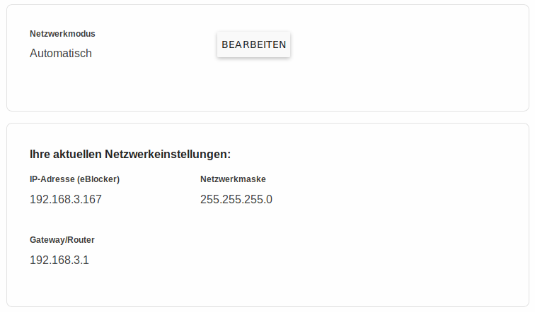

Deutsch | English
eBlocker Base ✓ / eBlocker Pro ✓ / eBlocker Family ✓
In den meisten Fällen kann der eBlocker im automatischen Konfigurationsmodus betrieben werden.

In manchen Fällen, zum Beispiel wenn Sie eine besondere Netzwerkinfrastruktur haben, kann es nötig sein, die Netzwerkkonfiguration des eBlockers umzustellen, um den eBlocker optimal nutzen zu können.
Wenn Sie auf den Button BEARBEITEN klicken, bietet der eBlocker drei verschiedene Netzwerkmodi an:
Automatischer Netzwerkmodus
In diesem Modus vergibt Ihr Router mit seinem DHCP-Dienst die IP-Adressen in Ihrem Netzwerk. Der eBlocker ist mit den meisten Router kompatibel, aber es gibt einige wenige Router, die so nicht mit dem eBlocker zusammen arbeiten.
Individuelle Einstellungen
In diesem Modus vergibt der eBlocker die IP-Adressen im Netzwerk. Dazu muss der DHCP-Dienst des Routers abgeschaltet werden. Der eBlocker übernimmt dann die Aufgaben des DHCP-Diensts in Ihrem Netzwerk. So gut wie alle Router sind in diesem Modus kompatibel mit dem eBlocker. Sie werden durch die Einrichtung der „individuellen Einstellungen“ von einem Assistenten begleitet, welcher Ihnen Schritt für Schritt Hilfestellungen gibt.
Hier finden Sie ein praktisches Beispiel...
Expertenmodus
In diesem Modus können erfahrene Benutzer die Netzwerkeinstellungen des eBlockers bearbeiten. Diese Einstellungen machen Sinn, wenn Sie zum Beispiel einen eigenen DHCP-Server in Ihrem Netzwerk betreiben.